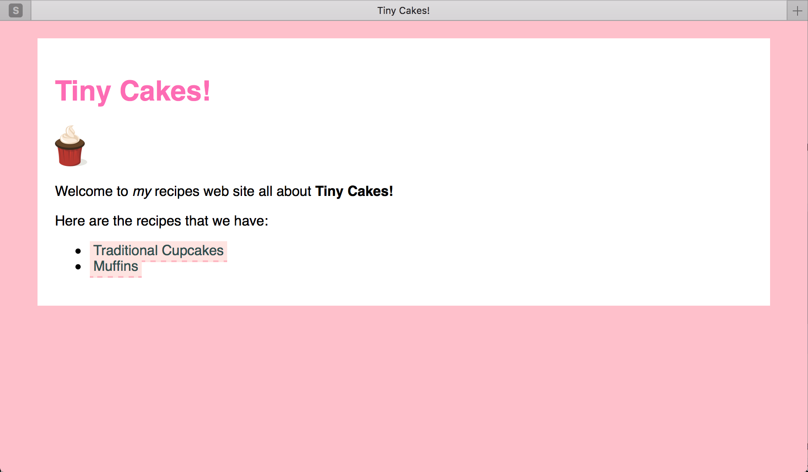
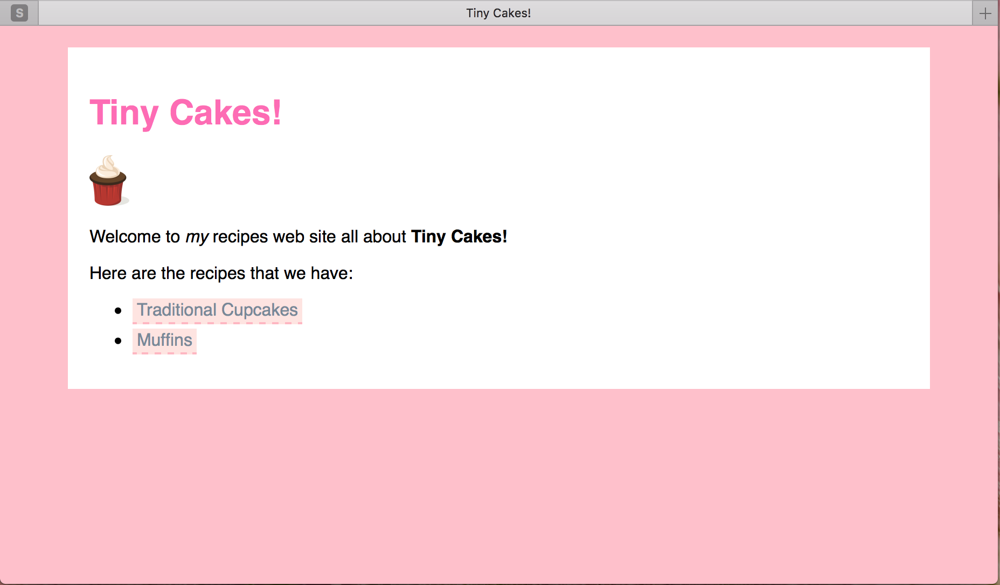
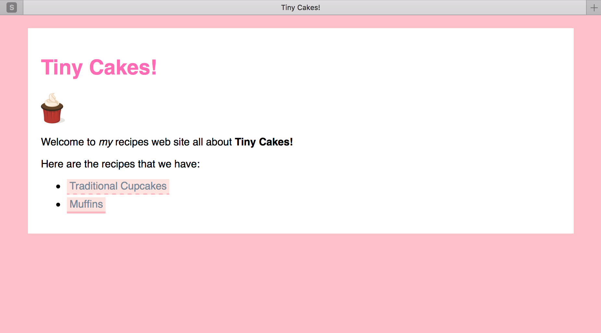

Etapy:
Step 9 - Hiperłącza
Nasze hiperlinki wyglądają bardzo zwyczajnie. To podkreślony, niebieski tekst, który zmieni się na fiolet, gdy na niego klikniesz.
Zmieńmy to tak aby wpasowywało się w styl naszej strony Tiny Cakes!
Najpierw zmieńmy wygląd <a>:
a {
color: #2f4f4f;
text-decoration: none;
background-color: #ffe4e1;
padding: 2px 4px;
border-bottom: 2px dashed #ffb6c1;
}
Odświeżmy stronę i zobaczmy co się zmieniło.

Deklaracja text-decoration wpływa na podkreślenie tekstu. Tutaj, ustawiliśmy wartość na none by pozbyć się podkreślenia. Następnie użyliśmy właściwości border-bottom aby zdefiniować nasze własne podkreślenie, któremu nadaliśmy wartość dashed. Pozwoliło nam to na otrzymanie lini przerywanej.
Hmmm, wygląda to ładniej, ale jeśli spojrzymy na stronę główną, to nasze hiperłącza trochę zlewają się ze sobą. Zróbmy trochę odstępu między elementami listy, są zdecydowanie za blisko siebie.
li {
margin-bottom: 10px;
}

Na tym zrzucie ekranu nie widać kursora, ale najeżdża on na dolny link.
Znacznie lepiej. Ale możemy ulepszyć nasze linki jeszcze bardziej.
Element <a> jest ciekawy, ponieważ istnieje w wielu “stanach”:
- Gdy strona, do której prowadzi link, nie została odwiedzona.
- Po odwiedzeniu strony.
- Gdy mysz znajdzie się nad linkiem
- Kiedy wybierzemy link za pomocą tabulatora.
- Gdy klikniemy myszką na link.
Każdy z tych stanów jest stylizowany niezależnie przy użyciu pseudoklas. Pseudoklasy możemy uznać za klasy specjalne, których przeglądarka używa do identyfikacji każdego stanu.
Pseudo-klasy <a> dla powyższych stanów są następujące:
link(link podstawowy)visited(link odwiedzony)hover(najechanie myszą)focus(zogniskowanie)active(aktywacja)
Określmy jakiś styl dla każdego z tych stanów.
Aby użyć pseudoklasy wstawiamy dwukropek : pomiędzy nazwę elementu a jego pseudoklasę.
a:visited {
color: #778899;
}
a:focus {
border: 3px dashed #ffb6c1;
}
a:hover {
border-bottom: 3px solid #ffb6c1;
}
a:active {
color: purple;
border: 3px solid #ffb6c1;
}
Nie musimy stylizować :link, ponieważ wcześniej ustaliliśmy styl dla a, co jest dokładnie tym samym co :link.

Powyższa kolejność pseudoklas jest ważna, ponieważ style hiperlinków nadpisują się na sobie nawzajem. Na przykład style zdefiniowane wcześniej będą miały zastosowanie do wszystkich następnych. Gdy łącze zostanie aktywowane, zostanie również najechane wskaźnikiem myszy. Jeśli umieścisz style w innej kolejności, możesz uzyskać dziwny efekty.
Zauważ, że dokonaliśmy dosyć drastycznych zmian w stylizacji linków. Użytkownicy są przyzwyczajeni do podkreślonego stylu tekstu, dlatego linki należy ostrożnie zmieniać. Duże zmiany mogą prowadzić do dezorientacji i denerwować użytkownika. W przypadku bardzo wyszukanych stylów (na przykład zmiana rozmiaru czcionki, która spowoduje, że tekst ucieknie od kursora myszy) może to uniemożliwić kliknięcie w link.
Tutaj dowiedz się więcej na temat stylów hiperlinków.